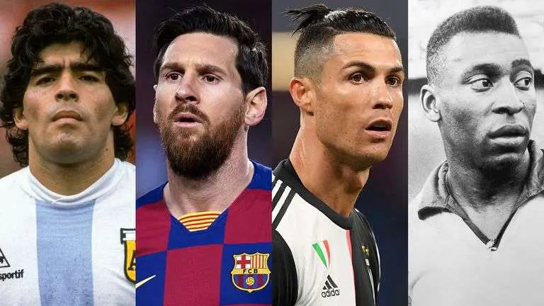

Among various popular games across the world, football is one of the most enthusiastic and energetic sports. This game is played between two teams, and each team has eleven members. A lot of football tournaments are held in various countries every year at the national and international levels. Every four years, the FIFA or Federation Internationale de Football Association conducts a world cup which is the most awaited championship. The game is called football because the ball is passed among the team members using their feet, and the use of the hand is considered a foul. This, however, is decided by the referee of the match. The International Football Association Board formulates rules that the players follow, and any contravention shall be considered a disqualification.
